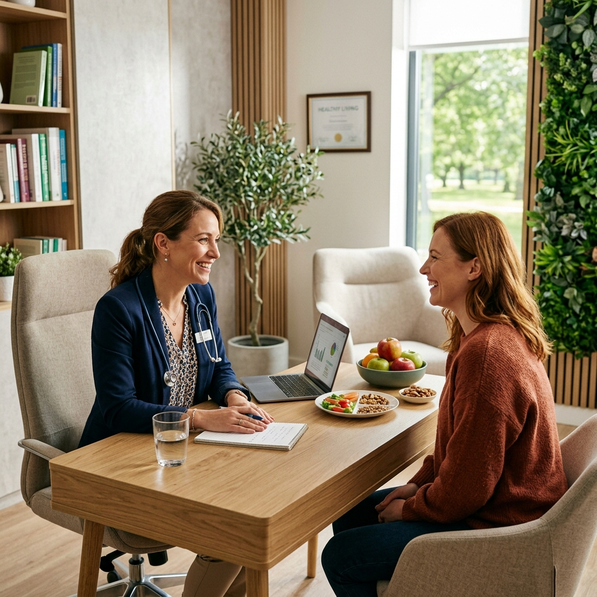

Domande Frequenti
Quanto dura la prima visita e cosa devo portare?
La prima visita ha una durata di circa 60 minuti. È un tempo che dedico volentieri a conoscerti a fondo e raccogliere in tranquillità tutte le informazioni utili per il tuo piano. Ti chiedo di portare in visione le tue ultime analisi del sangue (idealmente non più vecchie di 6 mesi) e l'eventuale refertazione medica relativa a patologie diagnosticate di cui soffri.
Devo pesare tutti gli alimenti?
Assolutamente no. Il mio obiettivo non è renderti schiavo di una bilancia pesa-alimenti, ma insegnarti a gestire le porzioni in modo sereno, naturale e pratico. Per questo, ove possibile, ti fornirò indicazioni flessibili e comode alternative visive (come l'uso di misurini, cucchiai, bicchieri o le proporzioni dirette nel piatto) per rendere la gestione dei tuoi pasti estremamente semplice, anche quando pranzi o ceni fuori casa.
Effettui consulenze online?
Sì, offro comodamente la possibilità di svolgere consulenze nutrizionali a distanza tramite una semplice videochiamata. La visita online si svolge con le medesime modalità di un colloquio tradizionale in studio: effettueremo una completa anamnesi nutrizionale, discuteremo dei tuoi obiettivi di salute e ti guiderò passo dopo passo indicandoti come fornirmi in autonomia alcune semplici misurazioni di base comodamente da casa tua. Ti garantisco lo stesso elevato livello di professionalità, attenzione e supporto.
Come posso prenotare un appuntamento a Modica?
Prenotare è un'operazione davvero semplicissima! Puoi visitare la pagina Contatti di questo sito per trovare tutti i miei recapiti ufficiali. Compila il modulo di richiesta, inviami un'email oppure contattami direttamente in modo rapido tramite telefono o un semplice messaggio WhatsApp. Sarò felice di concordare insieme la data e l'orario più adatti a incastrarsi con le tue esigenze.
